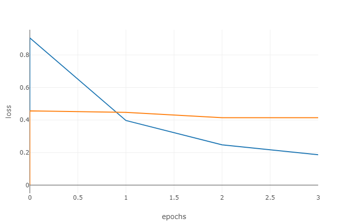
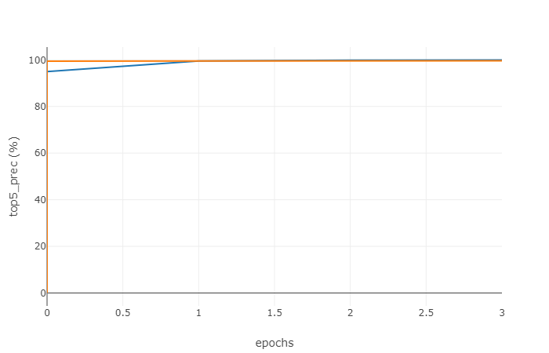

Deep Learning is a branch of Machine Learning that creates artificial networks and sent it through several computational layers of computation that helps break down data, categorize it and adapt to new situations more readily as it continues to be trained on new experiences. In past projects we have relied on numerous ways to identify features in images and use them to identify objects or classify the image as a scene with this collection of features. With a Deep Learning neural network instead of training a classifier with features the net uses its layers to categorize and identify patterns as it trains essentially teaching itself new features that it identifies with images during training. This ability to sort through multiple layers allows for simpler features to be gleaned at first and then more complex as the data passes through to the final layer and is associated with the ground truth of the image. For part 0 a simple network was trained on the 1500 training images and a network consisting of a convolutional filter and creates 10 filters for the image with random weights and initial biases of zero. As the network continues to train these filters are learned as the weights are shifted and biases associated with each of the filters. Next a max pooling layer allowed for the spatial resolution to be decreased (in this case by a factor of 7) as the max was found over a sliding window and output to the next layer. Then a non-linearity layer that removes all the negative values of the features found in the previous layer. Finally, another convolutional layer was used that is fully connected as it is reducing the spatial resolution to 1x1 and has a depth equal to the number of classifications being used. This layer will sort from the learned features and return the category scores for each image. This is the basis for our simple network and without any modification it classified the images with a validation accuracy of 36.28% a very low score. Examining our loss graph, the data being trained on is in fact overfitting thus reducing accuracy in the validation step. The loss of both sets starts off decreasing monotonically but for validation it quickly changes to an increase in loss and then plateaus. This is also true as we reach a max early on for the validation set while the training set continues to climb up to an almost perfect score.
There are several problems with the simple net we have sued to classify these images, the first is that the training set of images is very low this can be partially alleviated by jittering and normalizing the images, To jitter the images we take the training images being used and make artificially create variations of them that still fall in the same category, for this project this was done by randomly flipping the images horizontally from left to right to create a new distinct image that fits through our filtering layers differently that the original which strengthens our classifier, Normalization and zero centering was used as well so that all the images being trained or tested on can be brought into a spectrum of difference and variance to each other. It helps reduce the huge differences between the images affecting overfitting by giving them a sort of scale of differences from each other. Implementing these two into the creating our training and testing data respectively (using the mean and standard deviation for each set) brought accuracy up to 55.47%. The next issue that our network is not regularized we saw before the we have already made use of the convolution, max pool, and non-linearity layers. For regularization we need to add a dropout regularization layer that helps avoid overfitting of data by randomly turn off the connection of our networks during training, this reduces our accuracy of data in the training set but greatly reduces over fitting allowing our test accuracy to rise to 60.54%. Now our simple network isn’t very deep as it at first only uses 4 layers, it is especially lossy with the current max pool layer we have that slides a kernelled window with a large stride, we can help avoid this loss by adding another four layers before our last layer another convolution, max pool, relu (non-linearity) and dropout layer. Then we have to adjust the increasing depth of our network so that at the last layer it still reaches 15, we can also reduce our max pool layer stride and overall allow for less spatial loss and more filters to learn, right away the net doesn’t work quite as well as accuracy drops to 32.46% less than it was originally, this can be rectified by decreasing the learning rate however the runtime begins to climb as we do this. To avoid this increase in runtime we can add a normalization layer between our convolution and max pool layers using a weight of 1 and bias for zero which allowed us to keep a larger learning rate and achieve a 53.26% validation accuracy rate. To keep runtime low only one set of layers were added with decreasing kernel sizes 9,7,5,3 with strides of 1 for the convolution and 2 for the max pool to prevent lossiness, the last layer for the classifier was set to six in order to achieve full connectivity. This allowed for a robust classification that still scored high. With this network loss for validation decease monotonically and training set accuracy rose with validation accuracy imply a relieved fitting not too close to the training data.
Creating a good deep network is difficult and even with several layers the performance will take a good deal more tweaking to reach its full potential. For this section of the project we instead focused on taking an existing network (AlexNet) and fine tuning it to fit our 15 scene classification, The advantages of this are that we are only taking off the last layer in the classifier of the network so we are able to preserve a lot of the learned weights the classifier already contains compared to our simple network which initialized the weights with a normal random distribution. When finetuning the only had to replace the last layer in the classifier with a linear layer that reduced the depth to our 15 channels, the weights of this layer were initialized randomly, and the biases set to zero so during training this layer would be the most affected by the data, runtime was much slower with this model as the network is much larger than our simple one but in only 4 epochs we achieved an accuracy of 86.4%, vastly superior to the simple networks rate. Loss decreased then hit plateau for the validation set and the top score for each epoch stayed high throughout, while the runtime was similar to the simple networks finetuning this model worked extremely well also as good as the SUN paper which utilized a large amount of features.
|   |